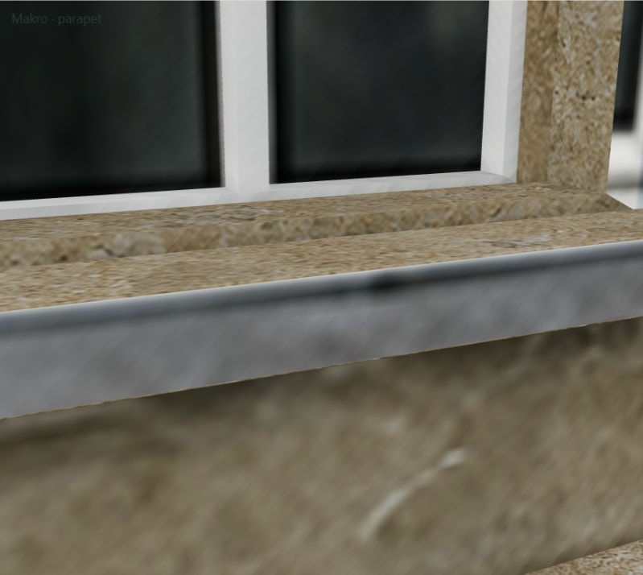
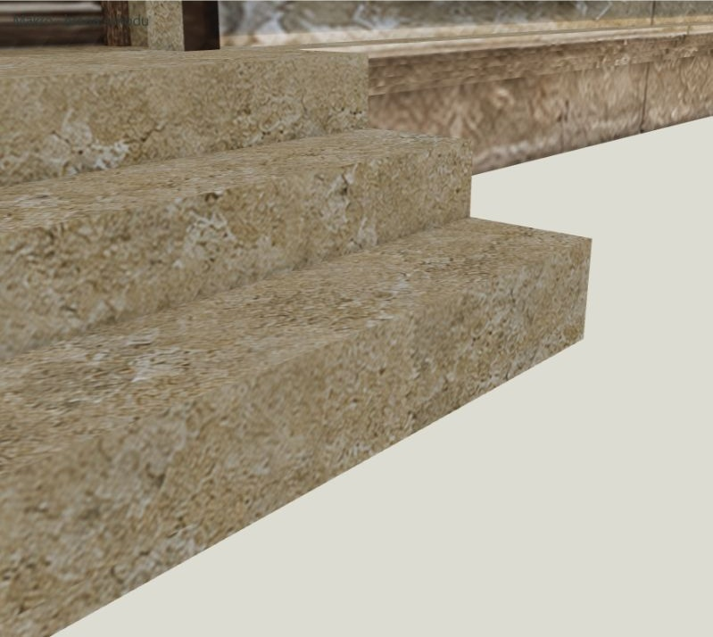
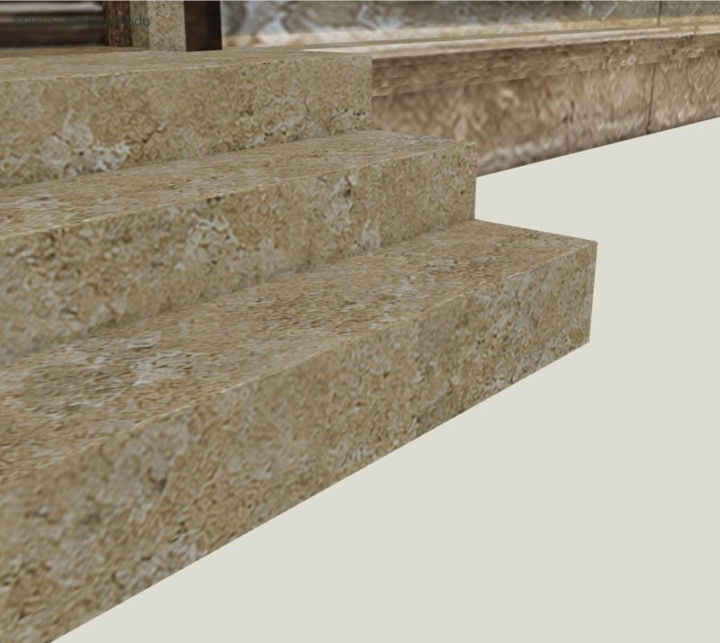
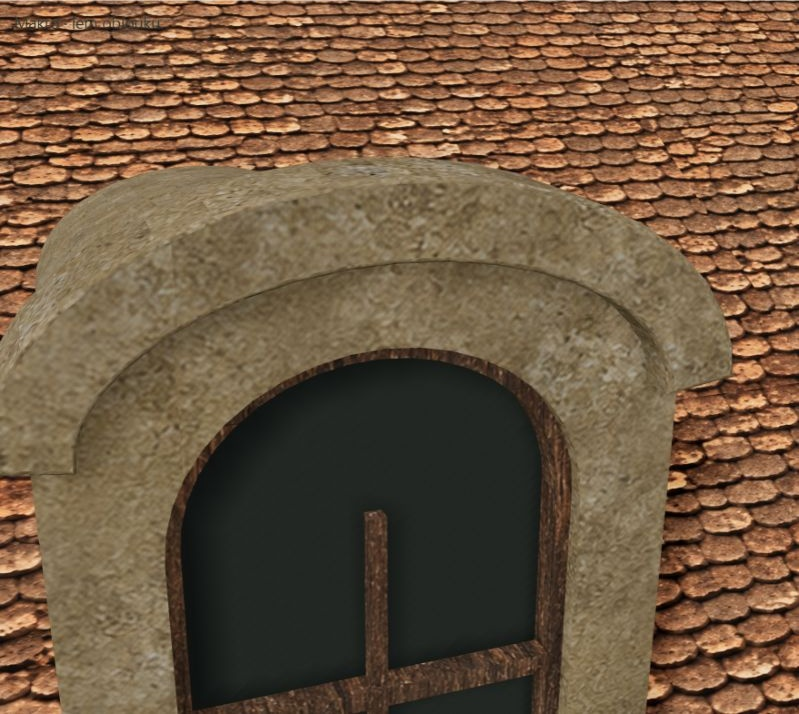

v10 → A

Načítání…
Parapety a horní hrany schodů: A 3 mm, B 5 mm, C 8 mm. Přední lem oblouku vikýře: 5 / 8 / 12 mm. A má 2 segmenty, B a C 3 segmenty. Rozměry jsou nastavené šířky bevelu; kolize omezuje clamp overlap.
Window sills and exposed step edges: 3 / 5 / 8 mm. Front dormer arch: 5 / 8 / 12 mm. A uses 2 segments, B and C use 3. Widths are requested bevel offsets, limited by overlap clamping.
Vyzkoušejte makro pohledy a režim bez textur. Nové plošky mají minerální materiál a vlastní UV. Jde o pracovní hypotézu opotřebení, nikoli doložené historické rozměry. Původní fotografie, hlavní model a ostatních 12 objektů zůstávají zachované. Vybranou variantu teprve použijeme jako základ dalšího postupu.
Use macro views and clay mode. New bevel faces have mineral materials and independent UVs. These are provisional wear hypotheses, not documented historical dimensions. The original photographs, main model and other 12 objects are preserved; no variant is yet the standard workflow.
Posuvník: vlevo původní v10, vpravo označená varianta. / Slider: original v10 on the left, named variant on the right.




První kandidát k posouzení: B. A je velmi jemná; C zvýrazňuje hranu více. / Initial candidate for review: B. A is very subtle; C gives a stronger edge.